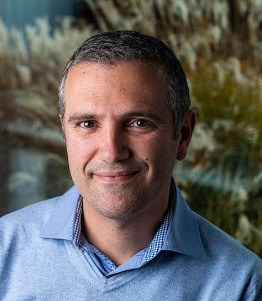

Keynote Speakers
We are delighted to welcome our keynote speakers to MVEO 2026. Speaker details and talk descriptions are listed below:
Professor Peter Atkinson
Distinguished Professor of Spatial Data Science at Lancaster University
Talk: Spatial Latent Gaussian Modelling with Change of Support
Spatial environmental data on some property of interest are often derived from multiple sources (e.g. EO satellites, in situ sensors, survey samples) with different spatial supports (the space on which a measurement or observation is defined). It is also common for predictors to be measured on different spatial supports than the response variable in a regression-type setting. The spatial support is ubiquitous for environmental science data, while notably absent in some other fields such as those that depend on natural language. Thus, for environmental science, image and data fusion are crucial tasks, including as part of multi-modal fusion. A common approach for handling different supports, used by practitioners, is to project all variables onto a common support (e.g., via downscaling or interpolation) and then use standard spatial models on this common support. However, this approach can introduce biases and the statistical coherence between different supports is not guaranteed. I will introduce a Bayesian spatial latent Gaussian model (SLGM) that can handle data with different rectilinear supports in the response variable and the predictors. The SLGM can handle changes of support naturally according to the properties of the spatial stochastic process being used, and can account for change of support uncertainty in parameter estimation and prediction. In the SLGM, spatial stochastic processes are defined as linear combinations of basis functions where Gaussian Markov random fields (GMRFs) define the weights. This process can then be projected to different (any) spatial supports whilst maintaining the same underlying parameters. The generalisation potential of the approach is demonstrated through simulation and a real use case, modelling the land suitability of improved grassland in South Wales, UK.
Dr. Nico Lang
Asst. Prof. at the University of Copenhagen
Talk: TBC....TBC...TBC....TBC...TBC....TBC...
TBC....TBC...TBC....TBC...TBC....TBC...TBC....TBC...TBC....TBC...TBC....TBC...TBC....TBC...
Dr. Olof Mogren
Principal Researcher at RISE Research institutes of Sweden
Talk: TBC....TBC...TBC....TBC...TBC....TBC...
TBC....TBC...TBC....TBC...TBC....TBC...TBC....TBC...TBC....TBC...TBC....TBC...TBC....
Dr. Devis Tuia

Associate Professor, Environmental Computational Science and Earth Observation Laboratory, EPFL
Talk: TBC....TBC...TBC....TBC...TBC....TBC...
TBC....TBC...TBC....TBC...TBC....TBC...TBC....TBC...TBC....TBC...TBC....TBC...TBC....
Dr. Maram Hasan
Postdoctoral Researcher at IIT Bombay
Talk: TBC....TBC...TBC....TBC...TBC....TBC...
TBC....TBC...TBC....TBC...TBC....TBC...TBC....TBC...TBC....TBC...TBC....TBC...